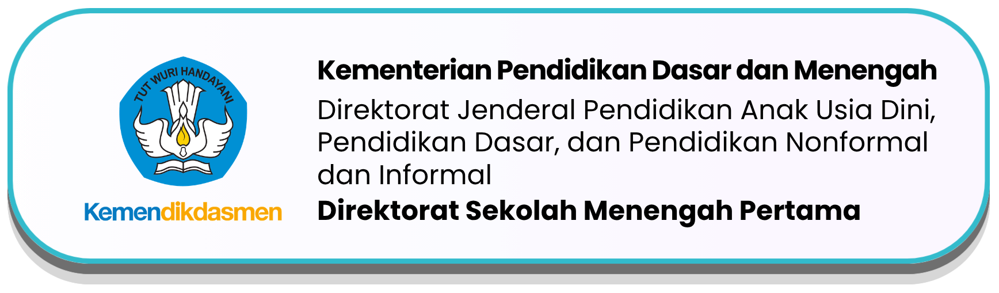
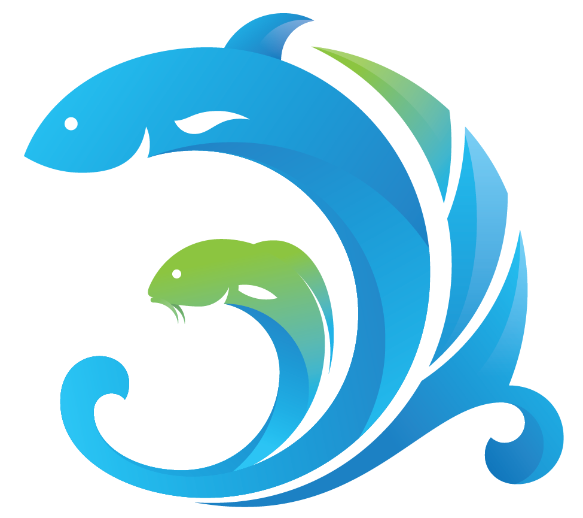
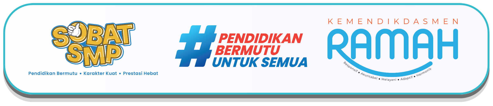
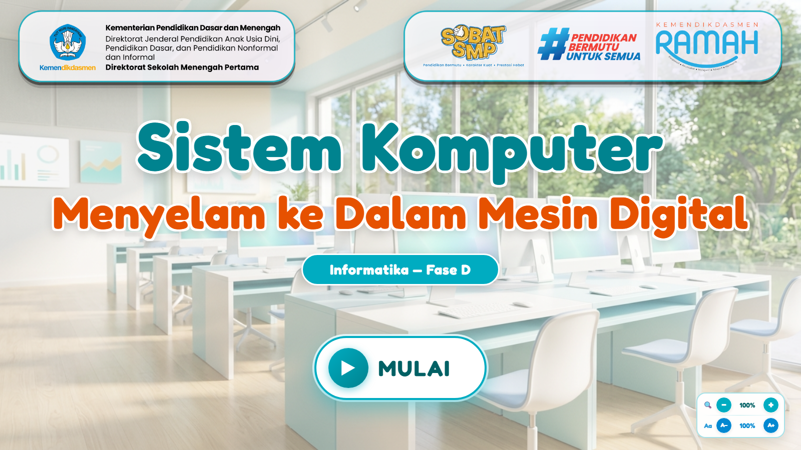
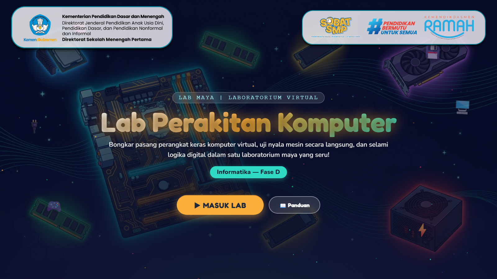
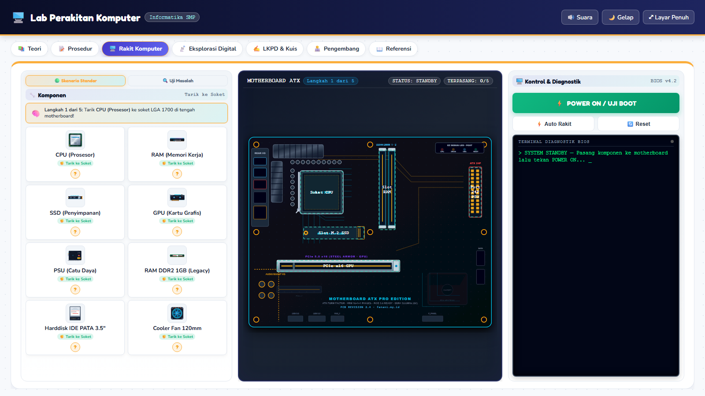

Kabupaten Lamongan
SMP Negeri 2 Lamongan

Lamongan
Megilan

★ Delegasi Kab. Lamongan · Apresiasi GTK Jatim 2026
Guru SMP Transformatif · Inovasi Pembelajaran
Sistem Komputer
Menyelam ke Dalam Mesin Digital
Inovasi MPI & Laboratorium Maya Berbasis Web — Informatika Kelas IX

HTML/CSS/JS
Web Murni
Layar 16 : 9
IFP · Lab · HP
Karya Utama · MPI Web
21 Hal Interaktif
MPI Sistem Komputer


📱 Pindai MPI
▸6 Materi Visual & Siklus CPU
▸Simulator Rakit PC 4 Misi
▸Kuis 4 Format & Log Prompt AI
Ekosistem · Virtual Lab
Praktik Mandiri
Lab Perakitan Komputer


📱 Pindai Lab
▸Rakit Motherboard ATX Virtual
▸Terminal Diagnostik & Beep BIOS
▸Biner 8-Bit, RGB & LKPD Digital
1 · Situasi & Tantangan (Kelas 9A–9H)
Mahir Layar Gawai, Belum Paham Mesin di Baliknya

1 : 35
Alat Terbatas
Takut Merusak PC
1 PC peraga untuk 35 murid.
58,40
Nilai Awal 9A
Tuntas Awal 37,1%
Baru 13 dari 35 murid tuntas.
16 : 9
Multi-Layar
IFP, PC Lab & HP
Tanpa instalasi aplikasi.
Etika AI
Transparan
Jujur & Terbuka
Log prompt AI dibuka penuh.
2 · Aksi Inovatif (Model ADDIE)
Belajar Aktif & Mencoba Tanpa Takut Merusak
1
Materi & Analogi Visual
Analogi kontekstual & video siklus CPU.
2
Simulator Rakit PC
Bunyi beep BIOS & pesan diagnostik.
3
Kuis 4 Format (20 Soal)
Umpan balik instan & skor langsung.
4
Guru Jadi Fasilitator
Murid bereksplorasi mandiri & aktif.
🎮 4 Misi Simulator Sistem Komputer
⚠️ Pengecoh: RAM DDR2 · HDD IDE · Adaptor 10W
1 · Rakit PCPasang 5 komponen utama.
2 · Sakelar BinerKonversi 0 & 1 ke ASCII.
3 · Layar GelapDiagnosa PC gagal tampil.
4 · Memori PenuhUpgrade kapasitas RAM.
3 · Dampak Nyata & Pengimbasan
Nilai Melonjak Tajam & Menginspirasi 160 Guru
Rata-Rata Nilai Kelas 9A
▲ +28,40 Poin
Awal
58,40
Akhir
86,80
Ketuntasan Belajar (KKTP ≥ 75)
▲ 13 → 32 Murid
Awal
37,1%
Akhir
91,4% (32/35 Tuntas)
25 dari 35 Murid
Belajar mandiri di rumah.
Cemas → Antusias
Diperluas ke 9B–9J & PWA.
★ Narasumber Dinas Pendidikan
Sosialisasi Pembelajaran Mendalam & KKA (15 Sep 2026) serta komunitas MGMP.
★ 5 Karya Gratis di fanani.my.id/lab
1 Lab Maya, 3 MPI, & 1 Game — kode terbuka untuk guru se-Indonesia.